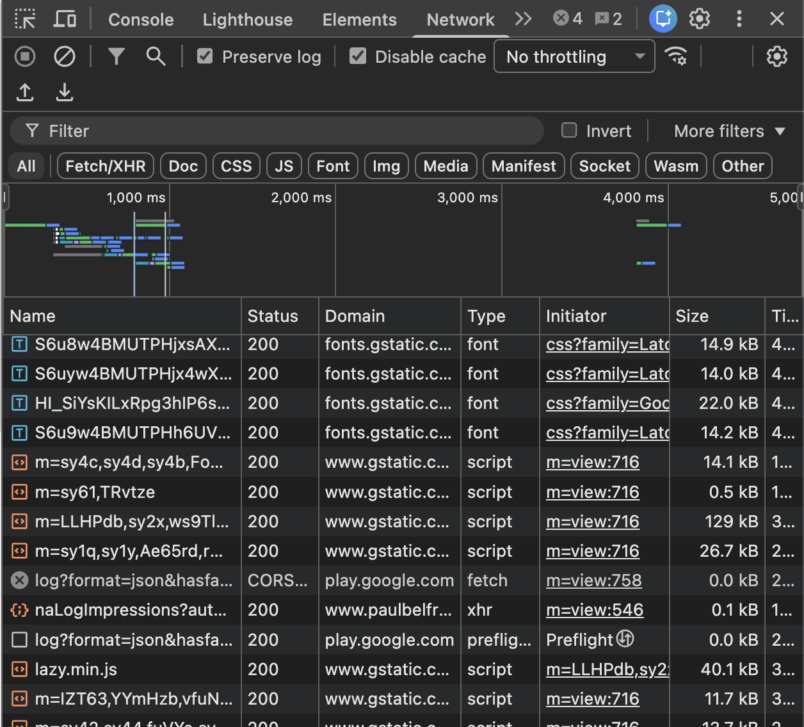

Modul 1 · Kapitel 1.1
Vad är webbutveckling?
Så hittar webbläsaren en server och hämtar en webbsida.
Mål
Efter kapitlet ska du kunna...
- förklara skillnaden mellan klient och server
- beskriva vad URL, DNS och IP-adress gör
- förklara HTTP, HTTPS och vanliga statuskoder
- förstå varför webbstandarder behövs
Startfråga
Vad händer när du skriver en webbadress?
Webbläsaren måste hitta rätt dator.
Den måste begära rätt resurs.
Servern måste skicka tillbaka ett svar.
Webben i korthet
Dokument som länkas ihop
- 1989 presenterade Tim Berners-Lee idén på CERN.
- 1991 blev webben tillgänglig för fler användare.
- 1994 bildades W3C för arbetet med gemensamma standarder.
Standarder
Samma webb på olika enheter
HTML och CSS följer gemensamma regler.
Därför kan samma sida fungera i olika webbläsare, operativsystem och skärmstorlekar.
Webben ägs inte av en enda webbläsare eller ett enda företag.
Klient och server
En begäran och ett svar
klient → begäran → Webbserver → svar → HTML, CSS, bilder
Klienten begär. Servern svarar med en resurs eller ett felmeddelande.
URL
Adressen till en resurs
https://example.com/bilder/logo.pnghttpsanger protokollet.example.comanger domänen./bilder/logo.pnganger resursens sökväg.
DNS och IP-adress
Internets adressbok
DNS översätter ett läsbart domännamn till serverns IP-adress.
HTTP och HTTPS
Regler för kommunikationen
| HTTP | HTTPS |
|---|---|
| Klient och server utbyter meddelanden. | Kommunikationen krypteras med TLS. |
Uttrycket SSL-certifikat används ofta, men modern kryptering bygger på TLS.
Statuskoder
Servern berättar hur det gick
| Kodgrupp | Betydelse |
|---|---|
200 | Begäran lyckades. |
300 | Resursen omdirigeras. |
400 | Klientfel, till exempel 404. |
500 | Fel på servern. |
Kontrollfråga
Vad betyder 404?
Tänk efter innan du går vidare.
Svar: servern hittar inte resursen som klienten begärde.
HTTP-metoder
Vad vill klienten göra?
| Metod | Uppgift |
|---|---|
GET | Hämta data eller en sida. |
POST | Skicka data, till exempel ett formulär. |
PUT | Uppdatera data. |
DELETE | Ta bort data. |
Bit och byte
Allt blir ettor och nollor
En bit är en 0 eller 1.
Åtta bitar bildar en byte.
Webbfiler mäts ofta i kB, MB och GB.
Mindre filer går normalt snabbare att överföra.
Hela flödet
Från URL till webbsida
- Webbläsaren läser URL:en.
- DNS hittar serverns IP-adress.
- Klienten skickar en HTTP-begäran.
- Servern svarar med statuskod och filer.
- Webbläsaren visar sidan.
Prova själv
Se trafiken i Network
- Öppna en webbsida.
- Välj Inspect eller Inspektera.
- Öppna fliken Network.
- Ladda om och leta efter
200eller404.

Om Inspect är avstängt
Prova en gästprofil

Sammanfattning
Kom ihåg
- Webbläsaren är klienten och hämtar resurser från servrar.
- DNS översätter domännamn till IP-adresser.
- HTTPS krypterar HTTP-kommunikationen med TLS.
- Statuskoder berättar hur servern svarade.
- Filstorleken påverkar hur snabbt sidan laddas.